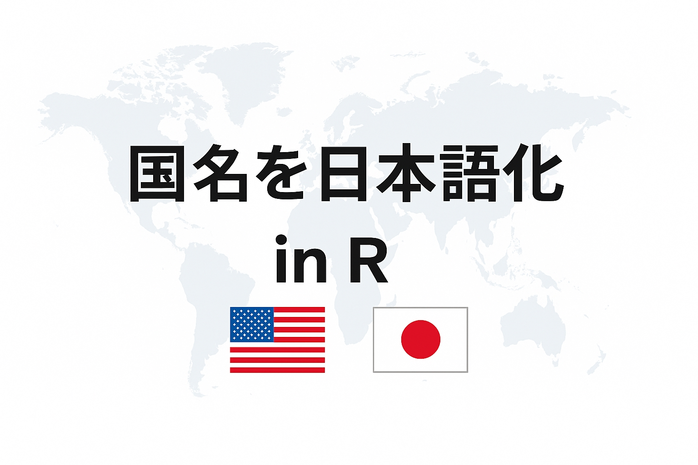

サムネイルはcopilotに作ってもらいました。
Packages
Contents
Background
補助に入っている授業で、学生たちはオープンデータを使ってRの練習をしています。使用しているデータはYamada et al. (2021)1によるCOVIDiSTRESS Global Surveyデータセットです。データセットはOSFで公開されています。そのうち最終データ（COVIDiSTRESS_May_30_cleaned.csv）を利用しています。
# A tibble: 125,306 × 154
ID answered_all Duration..in.seconds. RecordedDate UserLanguage Dem_age Dem_gender
<dbl> <chr> <dbl> <dttm> <chr> <dbl> <chr>
1 1 No 180 2020-05-30 23:47:17 SAR 29 Female
2 2 No 3100 2020-05-29 23:30:15 UR 20 Male
3 3 No 127 2020-05-30 22:40:15 SAR 47 Female
4 4 No 1710 2020-05-29 22:47:17 BG 79 Male
5 5 No 2239 2020-05-29 22:42:30 SAR 61 Female
6 6 Yes 1221 2020-05-29 21:25:09 IT 68 Male
7 7 Yes 1283 2020-05-29 21:25:37 SAR 29 Other/would ra…
8 8 Yes 1442 2020-05-29 21:25:17 SAR 38 Female
9 9 No 1952 2020-05-29 21:18:48 SME 35 Female
10 10 No 144 2020-05-30 20:24:41 SAR 23 Female
# ℹ 125,296 more rows
# ℹ 147 more variables: Dem_edu <chr>, Dem_edu_mom <chr>, Dem_employment <chr>, Country <chr>,
# Dem_Expat <chr>, Dem_state <chr>, Dem_maritalstatus <chr>, Dem_dependents <dbl>,
# Dem_riskgroup <chr>, Dem_isolation <chr>, Dem_isolation_adults <dbl>, Dem_isolation_kids <dbl>,
# AD_gain <chr>, AD_loss <chr>, AD_check <chr>, Scale_PSS10_UCLA_1 <dbl>,
# Scale_PSS10_UCLA_2 <dbl>, Scale_PSS10_UCLA_3 <dbl>, Scale_PSS10_UCLA_4 <dbl>,
# Scale_PSS10_UCLA_5 <dbl>, Scale_PSS10_UCLA_6 <dbl>, Scale_PSS10_UCLA_7 <dbl>, …学生たちは課題として推しグラフを1枚作るのですが、そのときにどこの国とどこの国を比較すると面白いかということで、国を選ぶ作業があります。データには参加者の居住国（Country）が英語で収められているのですが、学生たちが国を選ぶときに日本語化されていると見やすいかなと思ったのが今回の背景です。
実は、この事象は去年の段階で遭遇していて、テキトーにメモを取っておいてそのままにしておいたのですが、今年もまた需要が出てきたので、改めて備忘録として残しておこうということになりました。
Rの備忘録
— Takuto SAKAI (@tsakai_psych) June 16, 2024
授業のお手伝いしてるときに、国名一覧をオブジェクトに入れてくれてるパッケージないかな～とか思ってたんですが、やっぱりありました ⇒ {countrycode}
日本語含むいろんな言語が収録されてて便利https://t.co/CQC7C0MqPphttps://t.co/kDYHaZsOL5 pic.twitter.com/rpcXU8ru51
まずdplyr::count()でCountry列を集計してみます。
df_covid |>
count(Country, sort = TRUE) |>
filter(!Country %in% c("other", NA)) |>
rmarkdown::paged_table() # for better view on websiteどうやらフィンランドからの回答が一番多いようです。ちなみに、私の環境ではreadr::read_csv()でlocaleを特に設定せずデータを読み込むと、コートジボワール（n = 6）だけ文字化けします。
[1] "C\xf4te d\x92Ivoire"stringi::stri_enc_detect()を使って文字コードを推測します。
1stringi::stri_enc_detect(cotedivoire) |>
_[[1]] |>
mutate(
result = str_conv(cotedivoire, encoding = Encoding),
.by = Encoding
)- 1
-
stri_enc_detect()は引数strに入れた要素の数に合わせたdf入りlistを返すみたいです。今回は1個だけなので[[で抽出してdfにしておきます。
Encoding Language Confidence result
1 windows-1252 fr 0.64 Côte d’Ivoire
2 windows-1250 ro 0.64 Côte d’Ivoire
3 UTF-16BE 0.10 䏴瑥鉉癯楲�
4 UTF-16LE 0.10 整搠䦒潶物�
5 Shift_JIS ja 0.10 Ce d棚voire
6 GB18030 zh 0.10 C魌e d扞voire
7 Big5 zh 0.10 C矌e dvoireこの結果を見る限り、windows-1252でエンコードすればよさそうですね。というわけで、国名と人数だけのdfを作ります。
df_country_name <-
df_covid |>
count(Country, sort = TRUE) |>
filter(!Country %in% c("other", NA)) |>
mutate(
Country = if_else(
str_detect(Country, "voire$"),
str_conv(Country, encoding = "windows-1252"),
Country
)
)
df_country_name# A tibble: 176 × 2
Country n
<chr> <int>
1 Finland 22933
2 France 13475
3 Denmark 10891
4 Mexico 9169
5 Lithuania 8255
6 Argentina 5923
7 Japan 5072
8 Bulgaria 4785
9 Poland 3088
10 Sweden 3055
# ℹ 166 more rowscountrycode::countrycode
countrycode::countrycode()2を使って国名を日本語にします。countrycode::countryname()という関数もあるんですが、こちらの方がsaferみたいなことがHelpに記載されていたのでこちらを使うことにします。
sourcevar：国のコードもしくは国名が含まれているベクトル。origin：sourcevarのコーディングスキーム。destination: 変換したいコーディングスキーム。- ベクトルで入れた場合は第1要素から順にマッチングしていく。
warn: デフォルトでTRUE。マッチしなかったものについて教えてくれる。
日本語の国名は、cldr.name.ja、cldr.short.ja、cldr.variant.jaの三種類あります。とりあえずcldr.name.jaにしておきます。
df_country_name |>
mutate(
res = countrycode::countrycode(
Country,
origin = "country.name",
destination = "cldr.name.ja"
)
) |>
rmarkdown::paged_table() # for better view on websiteWarning: There was 1 warning in `mutate()`.
ℹ In argument: `res = countrycode::countrycode(Country, origin = "country.name", destination =
"cldr.name.ja")`.
Caused by warning:
! Some values were not matched unambiguously: Micronesia, Federated States of, Sudan, Southミクロネシア連邦と南スーダン以外は日本語化できました。なお、南スーダンは元のデータでは"Sudan, South"で入っていますが、"South Sudan"でマッチさせると日本語化できます。
[1] "南スーダン"coutrycode::codelistで変換テーブルを見てみると、ミクロネシア連邦については日本語名が用意されていませんでした。
countrycode::codelist |>
filter(str_detect(country.name.en, "Micronesia")) |>
select(country.name.en, ends_with("ja"))# A tibble: 1 × 4
country.name.en cldr.name.ja cldr.short.ja cldr.variant.ja
<chr> <chr> <chr> <chr>
1 Micronesia (Federated States of) <NA> <NA> <NA> coutrycode::countrycode()には引数custom_matchが用意されていて、ここに名前付きベクトルでoriginとdestinationのマッチング指定すれば、元の結果を上書きできます。
df_country_name |>
filter(Country %in% c("Sudan, South", "Micronesia, Federated States of")) |>
mutate(
res = countrycode::countrycode(
Country,
origin = "country.name",
destination = "cldr.name.ja",
custom_match = c(
"Sudan, South" = "南スーダン",
"Micronesia, Federated States of" = "ミクロネシア連邦"
)
)
)# A tibble: 2 × 3
Country n res
<chr> <int> <chr>
1 Micronesia, Federated States of 3 ミクロネシア連邦
2 Sudan, South 1 南スーダン 一応この関数だけで事足りるのですが、もう一つパッケージを見つけたのでそちらも使ってみます。
countries::country_name
countries::country_name()3も似たような感じで使えます。こちらは変換先だけ指定すればいいです。
x: 国名のベクトル。to: 変換先。- 日本語の場合は
"name_ja"を指定します。
- 日本語の場合は
verbose:TRUEにしておくと、正確・ファジーにマッチした要素の数やマッチしなかったものについて教えてくれます。
df_country_name |>
mutate(
res = countries::country_name(
Country,
to = "name_ja",
verbose = TRUE
)
) |>
rmarkdown::paged_table()
In total 176 unique country names were provided
173/176 have been matched with EXACT matching
3/176 have been matched with FUZZY matching
The following country IDs do not have a match in one or more of the requested naming conventions, NA returned:
(To avoid NAs, use - to = 'simple'- or set - na_fill = TRUE)
- Kosovoこちらはコソボがヒットしませんでした。countries::country_reference_list(_long)で変換テーブルを見てみると、他のほとんどの言語でもコソボは用意されていないようです。
countries::country_reference_list |>
1 rowid_to_column() |>
filter(if_any(.cols = everything(), .fns = ~str_detect(.x, "Kosovo"))) |>
pull(rowid) |>
(\(x) {
countries::country_reference_list_long |>
filter(ID == x)
}) ()- 1
-
country_reference_listの行番号がcountry_reference_list_longのIDに対応しているので、行番号をつけておきます。
# A tibble: 10 × 3
ID nomenclature name
<chr> <chr> <chr>
1 349 simple Kosovo
2 349 Name0 Kosovo
3 349 Name1 kosovo
4 349 Name2 XKO
5 349 Name3 Kosovo2
6 349 Name4 UNMIK/Kosovo
7 349 Name5 UVK
8 349 Name6 XK
9 349 Name7 Република Косово
10 349 Name8 UNK こちらの関数もマッチングテーブルを修正して、マッチしない国名を修正することができます4。ただ、ちょっとめんどくさいかも。
# create matching table
temp_df_match <- countries::match_table(
df_country_name$Country,
to = "name_ja"
)Some country IDs have no match in one or more of the requested country naming conventions, NA returned. rowid list_countries name_ja
1 86 Kosovo <NA># correct
temp_df_match$name_ja[86] <- "コソボ"
df_country_name |>
filter(Country == "Kosovo") |>
mutate(
res = countries::country_name(
Country,
to = "name_ja",
custom_table = temp_df_match
)
)# A tibble: 1 × 3
Country n res
<chr> <int> <chr>
1 Kosovo 2707 コソボSolution
2つの関数でNAになった国が被っていないので、今回はこの2つを使えばやりたいことが達成できます。
df_country_name |>
mutate(
temp_name_ja_1 = countrycode::countrycode(
Country,
origin = "country.name",
destination = "cldr.name.ja"
),
temp_name_ja_2 = countries::country_name(
Country,
to = "name_ja"
),
res_name_ja = if_else(
is.na(temp_name_ja_1),
temp_name_ja_2,
temp_name_ja_1
),
.after = Country
) |>
select(-starts_with("temp")) |>
rmarkdown::paged_table() # for better view on websiteというわけで国名を日本語化することができました。
Supplement
countrycode::codelistには国名以外にも地域区分などが収められているので、国名以外の情報も表示できます。例として、国連による地域区分も表示してみます。なお、地域区分は英語なので地域の日本語化は人力です。
Code
df_country_name |>
mutate(
# Japanese localize
temp_name_ja_1 = countrycode::countrycode(
Country,
origin = "country.name",
destination = "cldr.name.ja"
),
temp_name_ja_2 = countries::country_name(
Country,
to = "name_ja"
),
res_name_ja = if_else(
is.na(temp_name_ja_1),
temp_name_ja_2,
temp_name_ja_1
),
# for region matching
temp_name_en_pre = countrycode::countrycode(
Country,
origin = "country.name",
destination = "country.name.en"
),
temp_name_en = if_else(
is.na(temp_name_en_pre),
countries::country_name(Country, to = "name_en"),
temp_name_en_pre
),
# matching UN region
region_un = countrycode::countrycode(
temp_name_en,
origin = "country.name",
destination = "un.region.name"
),
region_un_sub = countrycode::countrycode(
temp_name_en,
origin = "country.name",
destination = "un.regionsub.name"
),
region_un_intrmd = countrycode::countrycode(
temp_name_en,
origin = "country.name",
destination = "un.regionintermediate.name"
)
) |>
# JP localize region. Not necessary.
mutate(
region_un = str_replace_all(
region_un,
pattern = c(
"Africa" = "アフリカ州",
"Americas" = "アメリカ州",
"Asia" = "アジア州",
"Europe" = "ヨーロッパ州",
"Oceania" = "オセアニア州"
)
) |>
replace_na("国連未加盟"),
across(
.cols = starts_with("region_un_"),
.fns = \(x) {
str_replace_all(
x,
pattern = c(
"Africa" = "アフリカ",
"America\\s*" = "アメリカ",
"Asia" = "アジア",
"Europe" = "ヨーロッパ",
"Northern\\s" = "北",
"Eastern\\s" = "東",
"(Southern|South)\\s" = "南",
"South-eastern\\s" = "東南",
"Western\\s" = "西",
"Central\\s" = "中央",
"Middle\\s" = "中部",
"Latin\\s" = "ラテン",
"Sub-Saharan\\s" = "サハラ以南",
"and\\sthe\\s" = "・",
"Caribbean" = "カリブ海地域",
"Australia\\sand\\sNew\\sZealand" = "オーストラリア・ニュージーランド",
"Melanesia" = "メラネシア",
"Micronesia" = "ミクロネシア",
"Polinesia" = "ポリネシア"
)
)
}
)
) |>
select(-starts_with("temp")) |>
relocate(
n,
.after = last_col()
) |>
rmarkdown::paged_table(options = list(rows.print = 20))実際にはcount()のところで性別の回答も入れたものを補助資料として作成しました。
Conclusion
countrycodeパッケージやcountriesパッケージを使って、データに含まれている国名を日本語名にしました。翻訳データがないワールドワイドなオープンデータで、国名を一括で変換したいときには便利だと思います。少なくとも人力で全部頑張るよりかはましです。
Session Infomation
R version 4.4.2 (2024-10-31 ucrt)
Platform: x86_64-w64-mingw32/x64
Running under: Windows 11 x64 (build 26100)
Matrix products: default
locale:
[1] LC_COLLATE=Japanese_Japan.utf8 LC_CTYPE=Japanese_Japan.utf8 LC_MONETARY=Japanese_Japan.utf8
[4] LC_NUMERIC=C LC_TIME=Japanese_Japan.utf8
time zone: Asia/Tokyo
tzcode source: internal
attached base packages:
[1] stats graphics grDevices utils datasets methods base
other attached packages:
[1] countries_1.2.2 countrycode_1.6.1 lubridate_1.9.4 forcats_1.0.0 stringr_1.5.1
[6] dplyr_1.1.4 purrr_1.1.0 readr_2.1.5 tidyr_1.3.1 tibble_3.3.0
[11] ggplot2_3.5.2 tidyverse_2.0.0
loaded via a namespace (and not attached):
[1] bit_4.6.0 gtable_0.3.6 jsonlite_2.0.0 crayon_1.5.3 compiler_4.4.2
[6] tidyselect_1.2.1 parallel_4.4.2 scales_1.4.0 yaml_2.3.10 fastmap_1.2.0
[11] R6_2.6.1 generics_0.1.4 knitr_1.50 htmlwidgets_1.6.4 pillar_1.11.0
[16] RColorBrewer_1.1-3 tzdb_0.5.0 rlang_1.1.6 utf8_1.2.6 fastmatch_1.1-6
[21] stringi_1.8.7 xfun_0.52 bit64_4.6.0-1 timechange_0.3.0 cli_3.6.5
[26] withr_3.0.2 magrittr_2.0.3 stringdist_0.9.15 digest_0.6.37 grid_4.4.2
[31] vroom_1.6.5 rstudioapi_0.17.1 hms_1.1.3 lifecycle_1.0.4 vctrs_0.6.5
[36] evaluate_1.0.5 glue_1.8.0 farver_2.1.2 pacman_0.5.1 rmarkdown_2.29
[41] tools_4.4.2 pkgconfig_2.0.3 htmltools_0.5.8.1 Footnotes
Yamada, Y., et al. (2021). COVIDiSTRESS Global Survey dataset on psychological and behavioural consequences of the COVID-19 outbreak. Scientific Data, 8, 3. https://doi.org/10.1038/s41597-020-00784-9↩︎
https://fbellelli.github.io/countries/articles/dealing_with_names.html↩︎